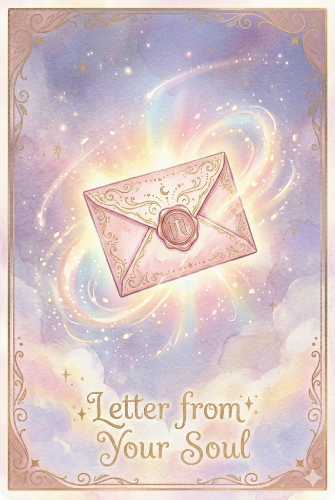

Letter from Your Soul
本質・使命・魂の声あなたの魂は、愛することも愛されることも知っています。過去に傷ついた経験があっても、魂のレベルではちゃんと癒えているから安心してください。
今必要なのは、相手に求めることより自分自身を満たすこと。あなたが自分の本質に正直でいるとき、ふさわしい相手は自然と目の前に現れます。
魂が選ぶ恋は、穏やかであたたかいものですよ。
今の仕事に違和感を覚えているなら、それは魂からのサインです。「もっとこうしたい」という声が聞こえていませんか。
魂の使命は壮大なものとは限りません。目の前の人を笑顔にすること、丁寧に仕事を仕上げること。そうした日々の積み重ねの中に、あなたが生まれてきた理由が隠れています。
今やっていることを、もう少し信じてあげてください。
魂のレベルで繋がっている人とは、会わない時間があっても関係が壊れません。逆に、どんなに頑張っても噛み合わない相手もいます。
それは良い悪いではなく、魂の相性。無理に合わせようとしなくていいんです。
あなたが本音で話せる相手を大切にしてください。その人たちこそ、魂が引き合わせたご縁です。
あなたの魂は、今世で何を経験したくてここに来たのでしょう。答えはすでに、あなたの中にあります。
理屈では説明できないのに惹かれること、なぜか繰り返し訪れるテーマ。そこに魂の青写真が描かれています。
人生の正解は外にはありません。胸の奥のかすかな声に耳を傾けてみて。それがあなたの魂の声です。
魂があなたに伝えたいのは「今のままでいい」ということ。成長しなきゃ、変わらなきゃ、と自分を追い込んでいませんか。
もちろん成長は素晴らしいけれど、今この瞬間のあなたも十分に尊い存在です。
完成形を目指すのではなく、今ここにいる自分をまるごと受け入れること。それが魂の望みであり、一番の使命ですよ。
PR
この手紙の意味を 今のあなたの状況で聞いてみる
やさしいメッセージの先で 気持ちや流れをもっと具体的に知りたい時は 直接相談する方が早いよ
料金やキャンペーンの最新情報は公式サイトをご確認ください